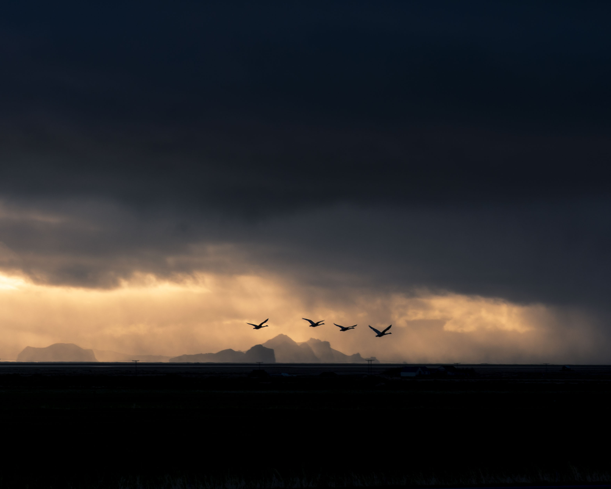
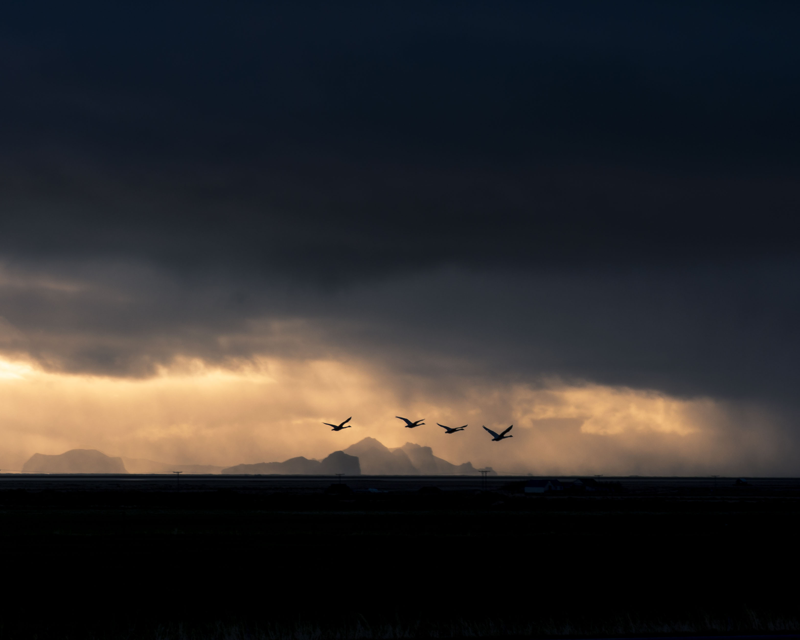

Ciao, sono Alessia
Studentessa di UX/UI Design su Start2impact!
Sono appassionata di video, creazione di contenuti, grafica e design. La mia più grande aspirazione è unire
tutte queste passioni per costruire il lavoro dei miei sogni, dove creatività e innovazione si fondano per
dare vita a progetti unici e coinvolgenti.
Credo fermamente nel potere della comunicazione visiva e nel suo impatto, e sono sempre alla ricerca di
nuove sfide per evolvermi e crescere nel mondo della progettazione e del digital content.


 
